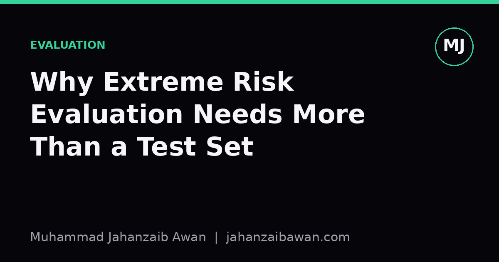

Why Extreme Risk Evaluation Needs More Than a Test Set
A held-out split tells you how a model behaves on data like the data you already had. Extreme risks live precisely in the region that split cannot see.

The comforting illusion of a single number
Every course on machine learning teaches the same ritual: split your data, train on one part, report accuracy or F1 on the other, and treat that number as the verdict. It is a good ritual. It catches overfitting, it forces discipline, and it gives you something comparable across models. My concern is not with the ritual itself but with what people quietly assume it proves. A held-out test set tells you how a model performs on examples drawn from the same distribution as your training data, sampled in the same way, at the same point in time. That is a narrow and specific claim, and it is very different from the claim people actually want to make, which is usually something like 'this model is safe to deploy' or 'this model will not cause serious harm in unusual situations'.
Consider a model built to flag high-risk clinical cases from patient records, evaluated with a standard 80:20 split and reporting 94 percent accuracy on the held-out 20 percent. That number is real and it is not wrong. But the held-out set was drawn from the same hospitals, the same time period, and the same recording practices as the training data. It says nothing about a patient population with a different age profile, a hospital that codes symptoms slightly differently, or a rare presentation that appeared twice in the entire dataset. The 6 percent of errors on the test set might be evenly spread and harmless, or they might be concentrated exactly in the cases where getting it wrong matters most. A single aggregate score cannot distinguish between those two worlds, and extreme risk lives entirely in the second one.
Rare events do not show up in random splits
The core statistical problem is sample size in the tail. If a catastrophic failure mode occurs in roughly 1 in 5,000 cases, a held-out set of 2,000 examples has less than a 40 percent chance of containing even one instance of it. Report a clean 99.8 percent accuracy on that set and you have learned almost nothing about the failure you actually care about. This is not a hypothetical quirk; it is the expected behaviour of random sampling applied to rare events. The rarer and more consequential the failure, the less a standard test set is designed to detect it, because standard test sets are built to estimate average performance, and averages are dominated by the common case.
There is a second, subtler issue: leakage. When a test set is constructed by randomly holding out rows from a single dataset, it often shares hidden structure with the training set, duplicate patients, near-identical images, correlated timestamps, or the same underlying event recorded twice. A model can look impressively robust on such a split while having learned nothing that generalises beyond the specific quirks of that dataset. I have seen this pattern often enough to treat any evaluation without an explicit discussion of how the split was constructed with suspicion. Extreme risk evaluation raises the stakes further: if the test set leaks information about exactly the rare failure cases you are trying to probe, you get false confidence precisely where you can least afford it.
Worked through with numbers, suppose 10,000 sensor readings feed a system meant to detect equipment faults, and 30 of them are true faults. A random 20 percent test split gives you around six fault examples, if you are lucky and none of them are duplicates of training examples from the same fault event recorded a few seconds apart. Six examples is not enough to estimate a false negative rate with any confidence; the 95 percent confidence interval on a proportion estimated from six trials is enormous. Yet teams routinely report a single recall figure from exactly this kind of split and treat it as settled.
What a fuller evaluation actually looks like
Rigorous evaluation for extreme risk needs to deliberately go looking for the conditions under which a model fails, rather than waiting for a random sample to reveal them by chance. This means building targeted stress sets: examples chosen specifically because they represent edge cases, unusual combinations, or known failure categories from past incidents, even if those examples are rare in the wild. It means testing under distribution shift on purpose, training on data from one time period or population and testing on another, to see how much performance actually degrades rather than assuming it will not. And it means adversarial probing, actively trying to construct inputs that break the model rather than only checking inputs that arrive naturally.
It also means reporting more than a point estimate. A false negative rate of 2 percent with a confidence interval of plus or minus 0.3 percent is a very different claim from the same 2 percent with an interval of plus or minus 8 percent, even though both might be written as '98 percent accuracy' in a summary table. Confidence intervals, calibration curves, and subgroup breakdowns cost little extra effort and often reveal that aggregate performance is masking sharply uneven performance across subpopulations or conditions. If a model is 99 percent accurate overall but its errors cluster entirely within a subgroup that makes up 4 percent of the population, that is not a footnote, it is the headline finding.
Finally, evaluation for extreme risk should be treated as ongoing rather than a one-off gate passed before deployment. Real-world distributions drift, adversaries adapt, and the conditions a model was validated under stop matching the conditions it operates under. Monitoring after deployment, with clear thresholds for re-evaluation, is not an optional extra bolted on for compliance; it is the mechanism by which you find out whether your held-out test set's promises still hold six months later.
The practical takeaway
None of this is an argument against held-out test sets. They remain a necessary sanity check and a useful common currency for comparing models. The argument is against treating them as sufficient, particularly when the cost of a rare failure is high. If you are building or evaluating a system where a small number of missed cases carries a large consequence, budget separately for constructing targeted stress tests, for measuring performance under realistic distribution shift, and for reporting uncertainty alongside point estimates. Ask, before trusting any evaluation, exactly how the test set was built and whether it was ever capable of containing the failure you are worried about. A clean number on a random split is easy to produce and easy to believe. Extreme risk deserves an evaluation that has actually gone looking for trouble.